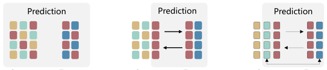

Adversarial Alignment and Disentanglement for Cross-Domain CTR Prediction with Domain-Encompassing Features (面向域包容特征的跨域 CTR 对抗对齐与解耦)
- 会议/期刊: ICDM 2025
- 作者与机构: Junyou He, Lixi Deng, Huichao Guo, Yong Li, Sulong Xu (京东搜索与推荐平台部)；Ye Tang (石化盈科)
- 推荐链路定位: 精排（跨域 CTR 预估）
- 研究方向: 跨域与多场景推荐 / CTR 预估与特征交叉
- 论文原文: https://arxiv.org/abs/2601.17472v1
- 开源代码: https://github.com/youzi0925/A-2DCDR
TL;DR (1分钟核心速览)
现有解耦式跨域推荐（DisenCDR/DCCDR/DDCDR）只把「域不变特征 + 目标域特有特征」送进预测层，把源域中与目标域分布不对齐、但对目标域仍有增益的信号（如 Sport→Cloth 中的「每周健身频次」）当作噪声丢弃。本文提出 A²DCDR：用带梯度反转的域约束 MMD（DC-MMD）把源域表征「推」成域包容特征，用 CLUB 互信息上界做域内解耦，再用特征重构保证信息完整性，最后以 Target-Aware 注意力融合。在 4 组 Amazon 场景上 HR@10 相对最强基线最高提升 6.96（Cloth），线上 15 天 A/B 的 CTR 提升 7.18%。
Background & Motivation (背景与核心矛盾)
- 主流范式: 跨域推荐分两支——混合式（CoNet/DTCDR/DDTCDR/BiTGCF）直接共享或映射用户嵌入；解耦式（DisenCDR/DCCDR/DDCDR/GDCCDR）把表征拆成域不变与域特有，仅迁移域不变部分。
- 前人局限: ① 混合式不做区分，源域噪声直接污染目标域，存在负迁移风险；② 解耦式以分布对齐为唯一准则，凡与目标域分布不一致的特征一律被排除，但「非对齐 ≠ 无用」——源域独有信号可能正是目标域缺失的补充信息。
- 核心洞察 (Key Insight): 对齐只保证分布一致，不保证信息完备。源域表征 \(h^A_t\) 应当同时覆盖「与目标域重叠的域不变部分」和「源域独有但对目标域有价值的非对齐部分」，即域包容特征（domain-encompassing feature）。
- 本文切入点: 用对抗式 MMD 把 \(h^A_t\)从目标域特有表征\(h^B_s\)处「推开」而非「拉齐」，从而在保留对齐能力的同时把非对齐信息留在\(h^A_t\) 内。

Method (核心方法设计)
1. 整体框架 (Overall Architecture)
每个域的用户被拆成两套 \(d\)维嵌入：域包容\(u_t\)与域特有\(u_s\)，物品嵌入\(v\)域内共享；三路编码器（公开数据用 2 层 LightGCN，工业侧换 BST）分别产出\(h_t, h_s, h_v\)。域间自适应模块用 DC-MMD 对齐\(h^A_t\)与\(h^B_t\)，同时借 GRL 把\(h^A_t\)推离\(h^B_s\)；域内解耦器用 CLUB 互信息上界压低\(I(h_t;h_s)\)，并用重构器从\([h_t;h_s]\)还原原始嵌入以防信息流失；最后 Target-Aware 注意力以候选物品\(h_v\)为 query 对\(\{h^{B}_t, h^{A}_t, h^{A}_s\}\) 加权，点积打分后接交叉熵。
flowchart TD
A["用户/物品嵌入 u_t, u_s, v"] --> B["编码器 E_t, E_s, E_v (LightGCN/BST)"]
B --> C["DC-MMD + GRL 域间自适应"]
B --> D["CLUB 互信息最小化 + 特征重构"]
C --> E["Target-Aware 注意力融合"]
D --> E
E --> F["点积打分 + 交叉熵"]2. 关键设计拆解 (Key Designs)
-
域约束 MMD（DC-MMD）：传统 MMD 只做单向拉齐，无法保留非对齐信息。本文在 RKHS 中写两项：第一项对齐 \(h^A_t\)与\(h^B_t\)的均值嵌入；第二项经两层网络\(G_B\)与梯度反转层作用于\(h^B_s\)，最大化其与\(h^A_t\)的核均值距离，等价于把\(h^A_t\) 撑大成「包含对齐区 + 源域独有区」的更大簇： $\(\mathcal{L}_{\text{DC-MMD}}=\Big\|\tfrac{1}{N}\textstyle\sum_i \phi(h^A_{t,i})-\tfrac{1}{N}\sum_i \phi(h^B_{t,i})\Big\|_{\mathcal{H}_\kappa}+\Big\|\tfrac{1}{N}\sum_i \phi(h^A_{t,i})-\tfrac{1}{N}\sum_i \phi(G_B(\text{GRL}(h^B_{s,i})))\Big\|_{\mathcal{H}_\kappa}\)$ 直觉：第一项保证可迁移性，第二项保证 \(h^A_t\) 不被压缩到目标域子空间，从而隐式吸收源域独有信号。
-
CLUB 互信息解耦 + 特征重构：仅靠域间对齐只是「间接」解耦，\(h_t\)与\(h_s\) 仍可能共享冗余。本文用 CLUB 的对比 log-ratio 上界（而非 InfoNCE 的下界）直接最小化域内互信息，配合打乱样本构造负对： $\(\mathcal{L}^A_{\text{mi}}=\tfrac{1}{N}\textstyle\sum_i\big[\log q_\theta(h^A_{t,i}\mid h^A_{s,i})-\log q_\theta(\tilde{h}^A_{t,i}\mid h^A_{s,i})\big]\)$ 同时重构器 \(R\)以 Frobenius 范数还原原始嵌入\(\mathcal{L}_{\text{rec}}=\sum_i\gamma\|\hat{u}_i-u_i\|_F^2\)，堵住「解耦越彻底、信息丢得越多」的漏洞——这是 DisenCDR/DCCDR 均未处理的盲点。
-
Target-Aware 融合与训练目标：静态拼接无法区分各表征对具体候选的贡献，故以候选物品为 query 做注意力：\(e^A_{u_i,j}=\sum_{h\in\{h^{B}_t,h^{A}_t,h^{A}_s\}}\text{softmax}(\langle h^A_{v_j},h\rangle/\sqrt{d})\,h\)，再\(\hat{r}=\langle e^A_{u_i,j},h^A_{v_j}\rangle\)。总损失\(\mathcal{L}_{\text{total}}=\mathcal{L}_{\text{ce}}+\alpha\mathcal{L}_{\text{DC-MMD}}+\mathcal{L}_{\text{mi}}+\mathcal{L}_{\text{rec}}\)，负采样沿用 DisenCDR 的 1 正 999 随机负协议，无额外难负采样设计。
Experimental Setup & Evaluation Protocol (实验设置与评估协议)
- 数据集与预处理: 沿用 DisenCDR 的 Amazon 四域切分，构造 Elec&Phone、Sport&Cloth、Sport&Phone、Elec&Cloth 四组场景，不使用任何 side information。
| 数据集(域对) | #Users | #Items | #Interactions(Train/Test) | 密度 | 场景说明 |
|---|---|---|---|---|---|
| Elec&Phone | 3,325 | 38,706 / 17,709 | 115,554+50,407 / 2,560+2,559 | 0.091%/0.089% | 3C 跨类 |
| Sport&Cloth | 9,928 | 30,796 / 39,008 | 92,612+87,829 / 8,326+7,540 | 0.033%/0.024% | 运动→服饰 |
| Sport&Phone | 4,998 | 20,845 / 13,655 | 50,558+42,446 / 3,698+3,999 | 0.052%/0.068% | 样本最少 |
| Elec&Cloth | 15,761 | 51,447 / 48,781 | 210,865+121,083 / 13,824+12,526 | 0.027%/0.017% | 最大规模 |
- 数据划分与防穿越 (Splitting Strategy): 与 DisenCDR 完全一致的固定训练/测试集划分（非时间戳切分），保证与历史基线可比。
- 排名评测协议 (Ranking Protocol):
Sampled Ranking——每正样本配 999 个随机负样本，报告 HR@10 与 NDCG@10；显著性用配对 t 检验，\(p<0.05\)。 - 对比基线与超参设置: 单域 NeuMF/NGCF/LightGCN，跨域 DDTCDR/PPGN/BiTGCF/DCCDR/DisenCDR/DDCDR/GDCCDR；嵌入维度统一 \(d=128\)，学习率网格\(\{0.00175,\dots,0.002\}\)，batch 1024，100 epoch，5 个随机种子取均值；\(\alpha=1.0\)、\(\beta_A=10^{-4}\)、\(\beta_B=9\times10^{-4}\)、\(\gamma_A=0.01\)、\(\gamma_B=0.09\)。
Key Experimental Results (实验关键数据)
1. 主实验对比 (Main Results)
| 场景 | 指标@10 | LightGCN | BiTGCF | DisenCDR | DDCDR | GDCCDR | A²DCDR | Improv. |
|---|---|---|---|---|---|---|---|---|
| Elec | HR | 19.17 | 22.14 | 24.57 | 24.78 | 23.71 | 25.66 | +0.88 |
| Elec | NDCG | 10.28 | 12.20 | 14.51 | 14.94 | 15.23 | 16.30 | +1.07 |
| Phone | HR | 23.25 | 25.71 | 28.76 | 28.89 | 29.75 | 30.44 | +0.69 |
| Phone | NDCG | 12.72 | 13.93 | 16.13 | 17.93 | 19.10 | 19.47 | +0.37 |
| Sport | HR | 13.19 | 14.83 | 17.55 | 17.86 | 19.54 | 21.25 | +1.71 |
| Sport | NDCG | 6.94 | 7.95 | 9.46 | 9.77 | 12.03 | 14.40 | +2.37 |
| Cloth | HR | 13.58 | 14.68 | 16.31 | 18.32 | 20.56 | 23.73 | +3.17 |
| Cloth | NDCG | 7.29 | 7.93 | 9.03 | 10.94 | 14.35 | 16.84 | +2.49 |
| Sport(→Phone) | HR | 16.33 | 18.63 | 20.17 | 19.25 | 20.57 | 24.45 | +3.88 |
| Phone(→Sport) | HR | 16.47 | 21.10 | 23.55 | 24.02 | 23.17 | 27.81 | +3.79 |
| Elec(→Cloth) | HR | 19.97 | 21.61 | 23.71 | 23.91 | 21.92 | 24.15 | +0.24 |
| Cloth(→Elec) | HR | 11.24 | 13.11 | 15.13 | 16.75 | 17.03 | 23.99 | +6.96 |
2. 消融实验 (Ablation Study)
| 变体 (Sport&Cloth) | Sport HR | Sport NDCG | Cloth HR | Cloth NDCG |
|---|---|---|---|---|
| LightGCN | 13.19 | 6.94 | 13.58 | 7.29 |
| Inter-domain Only | 17.32 | 9.40 | 18.94 | 12.33 |
| Intra + Inter | 20.30 | 13.29 | 22.10 | 14.88 |
| w/o TAFC | 21.12 | 13.75 | 22.95 | 16.42 |
| A²DCDR | 21.25 | 14.40 | 23.73 | 16.84 |
3. 关键实验发现 (Key Findings)
- DC-MMD 是最大贡献源：仅加域间模块即把 Sport HR 从 13.19 拉到 17.32（+4.13），已追平 DisenCDR/DDCDR 量级，说明「保留非对齐信息」比「更精细的对齐」更值钱；后续三个模块合计再贡献 +3.93。
- 稀疏场景收益最大：Sport&Phone 训练样本最少，HR 提升 +3.88/+3.79；分桶实验中 Cloth 侧 1–10 交互用户 HR 从 15.37（DisenCDR）升至 21.45，验证域包容特征对冷用户补信息的作用。
- 线上可落地：BST 骨干下离线 AUC 71.5→72.7，15 天 A/B 的 CTR +7.18%；跨域嵌入增量 3.8GB（基线 100GB），推理额外开销 <1ms，P99 仍在 33ms 内，说明重计算全部前置到离线阶段的设计成立。
Highlights & Limitations (亮点、对比与审稿批判)
- 与代表作对比 (vs. Prior Work): 相比 DisenCDR（变分推断 + KL 解耦）与 DCCDR（对比学习解耦），本文的关键差异是把「非对齐」从被消除的对象改为被保留的对象，并用 GRL 显式制造排斥；相比 DDCDR 的教师-学生选择性蒸馏，本文不需要额外的教师模型与两阶段训练，单阶段端到端即可，训练 30s/epoch（DDCDR 18s、DisenCDR 88s）。
- 可迁移亮点: ① 「对齐 + 排斥」的双向 MMD 可作为通用域适应正则，直接插到任意双域共享用户的场景；② CLUB 上界 + 重构损失的组合是解耦任务中防信息坍塌的通用配方，可迁移到多模态解耦与序列兴趣解耦。
- 审稿级局限批判: ① 评估仍是 1:999 随机负采样排序，未做 Full-Ranking，且划分沿用固定切分而非时间切分，存在乐观偏差；② 超参 \(\beta_A,\beta_B,\gamma_A,\gamma_B\)四个独立取值且量级差异大（\(10^{-4}\)vs\(0.09\)），跨场景迁移时调参成本高，论文未给出敏感性分析；③ 仅覆盖共享用户的双方域设定，非重叠用户与多域层级场景留作 future work。
Rating (四维评分)
- 方法创新性 (Novelty): ⭐⭐⭐⭐ （「非对齐特征也有价值」的洞察扎实，DC-MMD 的 GRL 排斥项设计简洁有效，但 MMD/CLUB/GRL 均为已有组件的组合式创新）
- 评估协议与实验扎实度 (Protocol & Experiments): ⭐⭐⭐⭐ （四组 Amazon 场景 + 稀疏分桶 + t-SNE + 线上 A/B 链条完整，扣分在采样排序与固定切分而非 Full-Ranking/时间切分）
- 写作与数学规范度 (Clarity & Rigor): ⭐⭐⭐ （公式与模块定义清晰，但存在符号笔误如 \(h^A_s\)/\(h^B_s\) 混用、结论段模型名误写为 "Disentangled Domain Distribution"，且缺复杂度分析）
- 工业落地与复现价值 (Industrial & Practical Value): ⭐⭐⭐⭐⭐ （京东真实双流场景上线，BST 骨干可插拔，代码开源，离线重计算/在线轻推理的拆分对工程侧极具参考价值）